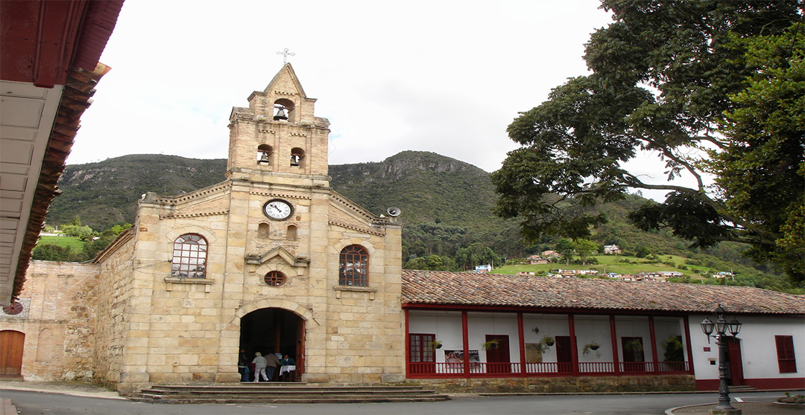
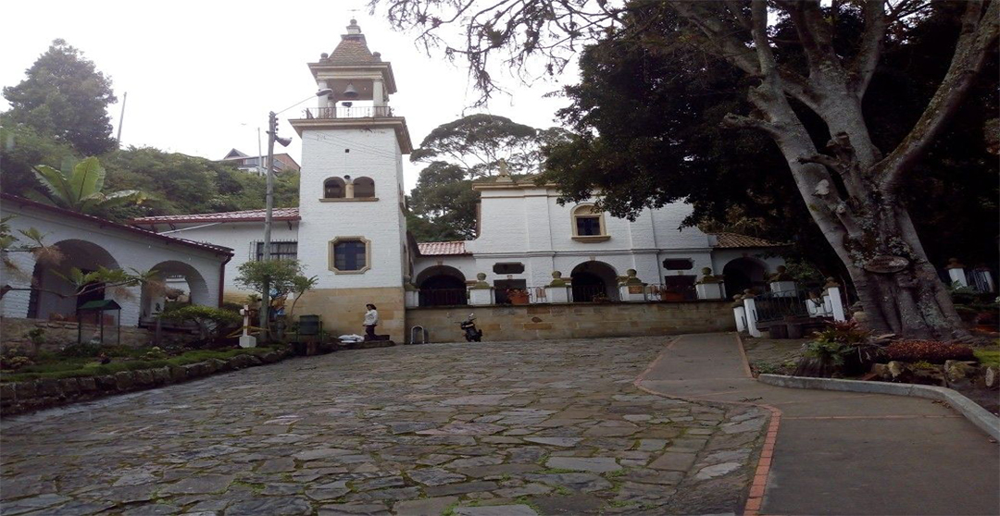

El municipio de sopó, ubicado muy cerca de Bogotá, es uno de los pueblos más lindos de Cundinamarca, en donde gran parte de sus visitantes llegan a descansar y disfrutar de su tranquilidad. La calidez de su población es notoria por su amabilidad y servicio, no dudes en visitarla y podrás oxigenar tu ser y cambiar de ambiente.
Las plazas, el parque y calles son la viva imagen de la época colonial e incluso indígena, que tanto marcan la ciudad, más a fondo en la historia esta ciudad fue protagonista de la firma de la capitulación del movimiento comunero en 1781, el primer movimiento independentista de Colombia.
Si deseas encontrarte contigo mismo y la naturaleza no dudes en acercar al Parque Ecológico Pionono donde podrás disfrutar un contacto más directo con la naturaleza y admirar toda la vasta fauna y flora del lugar mientras haces senderismo también posee una reserva natural donde podrás acampar y observar los diferentes paisajes de Sopó desde algunos de los miradores que se encuentran presentes allí, como el Mirador de las Águilas y el Cerro de la Cruz.
Por último, no olvides acercar a la Cabaña de alpina podrás gozar de los mejores postres, pero si lo que deseas es consumir un auténtico poste casero acércate a la plaza donde encontraras los mejores ya mejores precios.
